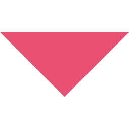

СХІД ВАНТАЖНОГО ПОЇЗДА З РЕЙОК
ОЖИДІВСЬКА КАТАСТРОФА
У Бузькому районі Львівщини з рейок зійшли 15 цистерн з жовтим фосфором, шість із них зайнялися. OЧерез горіння утворилася токсична хмара, яка загрожувала 14 населеним пунктам.

Наші дослідження спрямовані на встановлення
причин залізничних пригод
та розробку рішень
для їх уникнення в майбутньому.
ІСТОРІЯ ЛАБОРАТОРІЇ ЗТД
Історія залізнично-транспортних досліджень в Україні тісно пов'язана з діяльністю Сокола Е.М., який став одним з перших, хто ініціював створення судової залізнично-транспортної експертизи в Україні. 29 травня 2000 року Соколу було присвоєно кваліфікацію судового експерта з правом проведення таких експертиз. У 2002 році залізнично-транспортну експертизу було включено до переліку експертних спеціальностей наказом Міністра юстиції. У 2011 році у Львівському НДІСЕ був створений сектор судових залізнично-транспортних досліджень. З 2005 по 2011 роки Соколом було видано три монографії та понад 80 статей. Після його смерті у 2012 році в 2014 році була створена лабораторія залізнично-транспортних досліджень, яка оновила свій штат новими спеціалістами у 2015-2016 роках.
За час нашого існування вже виконано велику кількість складних і особливо складних залізнично-транспорних експертиз, зокрема резонансних.
Також ми займаємося науковою діяльністю, присвяченій залізнично-транспортній експертизі: написання статей, наукових тем, книг, тощо.
2000+ Експертиз
500+ Наукових статтей
3 Конференції
2 Збірника
НАША ЕКСПЕРТНА РОБОТА
ТОП-3 РЕЗОНАНСНИХ СПРАВ
Досліджувані випадки
НАША НАУКОВА РОБОТА


ЕКСПЕРТИ ЛАБОРАТОРІЇ ЗТД
Зв'яжіться з нами
Якщо у вас виникли питання — телефонуйте або пишіть, ми завжди на зв’язку!
Питання для ЗТ експертизи та додаткові матеріали
⬛наїзди поїзда на пішохода
Експертиза з охорони праці та безпеки життєдіяльності
Постанова №1
В додатках супровідного листа до даної постанови повинні бути вказані матеріали…
Обов’язково вказати:
Дозволяю користуватися матеріалами, які були надані з супровідним листом №… від... для виконання решти залізнично-транспортних експертиз
Залізнично-транспортні експертизи
Постанова №2
Постанова №3
Постанова №4
Матеріали та відомості, які необхідні
⬛сходи рухомого складу з рейок
Залізнично-транспортна експертиза
Постанова №1
В додатках супровідного листа до даної постанови повинні бути вказані матеріали…
Обов’язково вказати:
Дозволяю користуватися матеріалами, які були надані з супровідним листом №… від... для виконання решти залізнично-транспортних експертиз
Постанова №2
Постанова №3
Постанова №4
Постанова №5
Постанова №6
Постанова №7
Матеріали та відомості, які необхідні
⬛зіткнення поїздів з автотранспортом
Автомеханічна експертиза
Постанова №1
В додатках супровідного листа до даної постанови повинні бути вказані матеріали…
Обов’язково вказати:
Дозволяю користуватися матеріалами, які були надані з супровідним листом №… від... для виконання решти залізнично-транспортних експертиз
Залізнично-транспортні експертизи
Постанова №2
Постанова №3
Постанова №4
Постанова №5
Матеріали та відомості, які необхідні